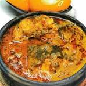

Banga Soup
Banga Soup, also known as Amuamiedi, is a rich and nutritious Urhobo soup made from palm nut extract. It is a beloved staple across the Niger Delta region, best served with eba or starch.
Why Banga Soup is Nutritious
- Rich in minerals
- Helps in the treatment of Vitamin A deficiency
- Rich in Vitamin K
- Rich in antioxidants
- contains nutritients that support good brain functions
Recipe Details
Prep Time: 15 minutes
Cook Time: 30 minutes
Total Time: 45 minutes
Servings: 8 people
Difficulty: Intermediate

Ingredients
- 1.5 lb Beef or any meat of your choice
- 1 large onion - half chopped, half-blended
- 1 teaspoon Cameroon Pepper (substitute with cayenne pepper)
- 2 teaspoons Seasoning powder or Bouillon cubes
- 3 medium Stockfish Panla (Okporoko) - soaked in hot water
- 1 can Palm-nut Extract
- 2 Scotch bonnets
- 1 tablespoon Banga Spice (Irugeje and Ataiko)
- 1-2 tablespoons Crushed Obeletientien leaves or Dried bitter leaves
- 1 Oburunbebe stick
- 2 medium Dried Fish - soaked and deboned
- 4 to 6 cups Water or Stock
- 1 tablespoon Ground Crayfish
- Salt to taste
Cooking Instructions
- Boil the palm kernel fruit for 30 minutes until soft.
- Pound gently in a mortar, strain through a sieve to extract liquid.
- Boil the extract until it thickens and oil rises to the top.
- Cook meat with onions, pepper, seasoning and salt until tender.
- Add stockfish and cook for another 10 minutes, then set aside.
- Add palm nut concentrate, dilute with stock, cook until oil floats.
- Blend scotch bonnet and onion, add to pot.
- Add Banga spice, fish, meat, crayfish and Oburunbebe stick. Cook 10 mins.
- Stir in bitter leaves, simmer until thickened. Serve hot!
Tips and Notes
- Using canned palm nut extract? Skip steps 1 to 3.
- Remove the Oburunbebe stick before serving.
- Tastes even better the next day!
Nutrition Facts (per serving)
Calories: 380 kcal
Protein: 24g
Carbohydrates: 10g
Vitamin A: High
Vitamin K: High
Learn More
For more details visit:
All Nigerian Recipes - Banga Soup